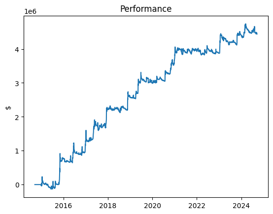

prm = {}
prm['when_trade'] = 'open'
prm['start_date'] = 100
prm['mawin'] = 10
prm['sdwin'] = 30
prm['wvol'] = 60
prm['target_vol'] = 0.005
prm['AUM'] = 10e6
prm['tc_slope'] = 1e3
prm['tc_bias'] = 100
prm['er_member_func'] = get_er()
prm['risk_member_func'] = get_risk()
prm['tc_member_func'] = get_tc()
prm['pm_member_func'] = get_pm()Example
backtest
backtest (data, param)
import_module = get_data()
df = import_module('BTC-USD').sim_data()
print(df)[*********************100%***********************] 1 of 1 completed Open High ... Adj Close Volume
Date ...
2014-09-17 465.864014 468.174011 ... 457.334015 21056800
2014-09-18 456.859985 456.859985 ... 424.440002 34483200
2014-09-19 424.102997 427.834991 ... 394.795990 37919700
2014-09-20 394.673004 423.295990 ... 408.903992 36863600
2014-09-21 408.084991 412.425995 ... 398.821014 26580100
... ... ... ... ... ...
2024-09-13 58130.324219 60648.023438 ... 60571.300781 32490528356
2024-09-14 60569.117188 60656.722656 ... 60005.121094 16428405496
2024-09-15 60000.726562 60381.917969 ... 59182.835938 18120960867
2024-09-16 59185.226562 59205.511719 ... 58192.507812 32032822113
2024-09-17 58204.093750 61207.335938 ... 61207.335938 32345808896
[3654 rows x 6 columns]
Open High ... Adj Close Volume
Date ...
2014-09-17 465.864014 468.174011 ... 457.334015 21056800
2014-09-18 456.859985 456.859985 ... 424.440002 34483200
2014-09-19 424.102997 427.834991 ... 394.795990 37919700
2014-09-20 394.673004 423.295990 ... 408.903992 36863600
2014-09-21 408.084991 412.425995 ... 398.821014 26580100
... ... ... ... ... ...
2024-09-13 58130.324219 60648.023438 ... 60571.300781 32490528356
2024-09-14 60569.117188 60656.722656 ... 60005.121094 16428405496
2024-09-15 60000.726562 60381.917969 ... 59182.835938 18120960867
2024-09-16 59185.226562 59205.511719 ... 58192.507812 32032822113
2024-09-17 58204.093750 61207.335938 ... 61207.335938 32345808896
[3654 rows x 6 columns]bkt = backtest(df,prm)import matplotlib.pyplot as plt
import numpy as np
# Plot the data
plt.plot(bkt['pnl'].cumsum())
# Add labels and title
plt.xlabel('')
plt.ylabel('$')
plt.title('Performance')
# Show the plot
plt.show()
Run parameters optimization
In series using a simple for loop:
bkts = []
for i in range(0,40,2):
prm['mawin'] = 10*(i+1)
#print(prm['mawin'])
bkt = backtest(df,prm)
bkts.append(bkt)In parallel using multiprocessing:
@parfor(range(0,40,2)) # also works:[0,2,10,20]
def fun(i):
prm['mawin'] = 10*(i+1)
return backtest(df,prm) 0%| | 0/20 [00:00<?, ?it/s] 5%|██▏ | 1/20 [00:03<01:10, 3.73s/it] 25%|██████████▊ | 5/20 [00:03<00:08, 1.73it/s] 45%|███████████████████▎ | 9/20 [00:05<00:05, 1.99it/s] 70%|█████████████████████████████▍ | 14/20 [00:05<00:01, 3.79it/s] 85%|███████████████████████████████████▋ | 17/20 [00:06<00:00, 3.36it/s]100%|██████████████████████████████████████████| 20/20 [00:06<00:00, 2.89it/s]